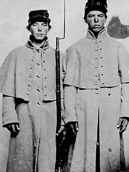

|

NAMES: John Walden Thurston (left) and Stephen
Thurston, Jr.
BORN: John - 1845, Stephen - 1843
DIED: John - 1866, Stephen - 1864
ALLEGIANCE: Union
HIGHEST RANK: Private
UNITS: John and Stephen - 11th Maine Infantry,
Company K; John - 6th Regiment, Veteran Reserve Corps
RECORD: Both enlisted in the 11th Maine, Company K,
in July 1862. John - hospitalized with a fever at Hilton
Head, South Carolina, in August 1863, then transferred to
DeCamp General Hospital, David's Island, New York. Assigned
to the Invalid Corps in September. Mustered out in
Cincinnati, Ohio, in July 1865. Stephen - mortally wounded
near Deep Bottom, Virginia, on July 23, 1864. Died four days
later at Point of Rocks depot hospital.
|
|
When the Civil War erupted in 1861, John Walden Thurston and
his older brother, Stephen Thurston, Jr., were toiling
together as farm laborers in Newport, Maine. Though anxious
to enlist in the Union army, they knew they were needed more
at home to work the farm that belonged to their parents,
Stephen and Emily. But when their father died in 1862, the
brothers decided it was time to leave. So in July they lied
about their ages-John was only 17 and Stephen 19-and
enlisted in the 11th Maine Infantry, Company K. They marched
away from the farm together, but neither would survive the
rigors of war.
Both brothers headed south with the 11th. Only months
after enlisting, they found themselves at Hilton Head, South
Carolina. While there, John contracted an illness that would
never leave him; army doctors believed it was rheumatic
fever. He was enrolled in the Invalid Corps, later called
the Veteran Reserve Corps, where he was assigned less
strenuous duties. He served the rest of his three-year
enlistment in Ohio, guarding trains and supply depots.
Mustered out in July 1865, John remained in poor health. He
died quietly in April 1866 at the age of 21 and was buried
in the family plot in Riverside Cemetery at Newport. After
lengthy delays, the pension his mother sought for him as a
disabled veteran was denied in 1881; the government claimed
his condition was not directly related to his army service.
Even as his younger brother suffered, Stephen stayed with
the 11th Maine. The regiment traveled through South Carolina
and Georgia to Florida before being sent back north to
Virginia in July 1864. The 11th participated in the siege of
Petersburg, where it was ordered to guard the Union
bridgehead across the James River at Deep Bottom. Company K
was sent out on July 23, 1864, to reconnoiter Confederate
activities on Strawberry Plains, just east of the
bridgehead. The company encountered enemy pickets, and both
sides opened fire. Three Union soldiers were killed and four
wounded. Stephen, one of the wounded, was taken to the Point
of Rocks depot hospital, where he died days later. He was
buried near the hospital, but his body was moved in 1866 to
the City Point National Cemetery in Hopewell, Virginia.
Source: Civil War Times Illustrated
37:1 (March 1998), 80.
|